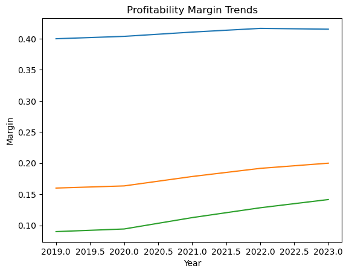
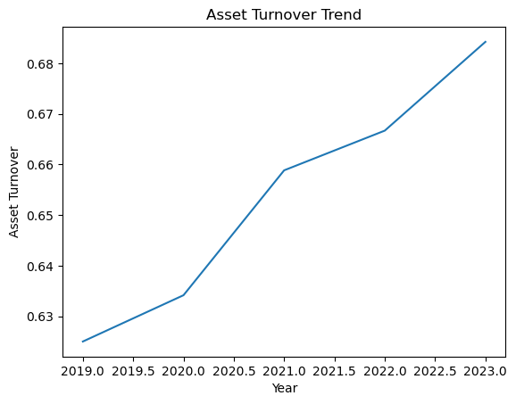
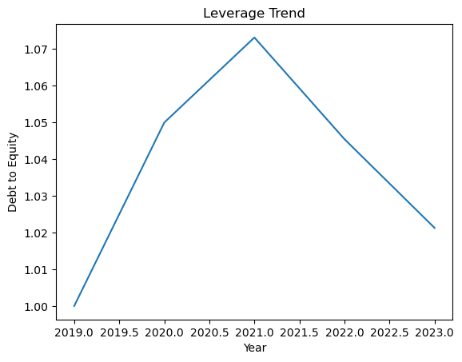

Chapter 4: Applying Financial Metrics Using Python#
1. Financial Dataset Overview#
Why This Dataset Matters
Before calculating financial metrics, it is important to understand the structure and context of the financial data.
In real-world analysis, financial data is often sourced from company filings, databases, or internal systems.
In this chapter, we will work with historical financial statement data for a hypothetical company.
The dataset includes:
Revenue
Cost of Goods Sold (COGS)
Operating Expenses
Interest Expense
Tax Expense
Total Assets
Total Liabilities
Shareholders’ Equity
Analysis Objective
The objective of this analysis is to:
Calculate key financial metrics
Analyze performance trends over time
Interpret results from an analyst’s perspective
In the next section, we will load the financial dataset using Python and prepare it for analysis.
2. Loading Financial Data Using Python#
import pandas as pd
import numpy as np
# Create a sample financial dataset
data = {
"Year": [2019, 2020, 2021, 2022, 2023],
"Revenue": [500, 520, 560, 600, 650],
"COGS": [300, 310, 330, 350, 380],
"Operating_Expenses": [120, 125, 130, 135, 140],
"Interest_Expense": [20, 22, 21, 20, 18],
"Tax_Expense": [15, 14, 16, 18, 20],
"Total_Assets": [800, 820, 850, 900, 950],
"Total_Liabilities": [400, 420, 440, 460, 480],
"Equity": [400, 400, 410, 440, 470]
}
df = pd.DataFrame(data)
df
| Year | Revenue | COGS | Operating_Expenses | Interest_Expense | Tax_Expense | Total_Assets | Total_Liabilities | Equity | |
|---|---|---|---|---|---|---|---|---|---|
| 0 | 2019 | 500 | 300 | 120 | 20 | 15 | 800 | 400 | 400 |
| 1 | 2020 | 520 | 310 | 125 | 22 | 14 | 820 | 420 | 400 |
| 2 | 2021 | 560 | 330 | 130 | 21 | 16 | 850 | 440 | 410 |
| 3 | 2022 | 600 | 350 | 135 | 20 | 18 | 900 | 460 | 440 |
| 4 | 2023 | 650 | 380 | 140 | 18 | 20 | 950 | 480 | 470 |
The dataset is structured in a tabular format, with each row representing a financial year and each column representing a financial metric.
This structure closely mirrors how financial data is stored in real-world analytical systems.
Basic Data Validation#
df.info()
<class 'pandas.core.frame.DataFrame'>
RangeIndex: 5 entries, 0 to 4
Data columns (total 9 columns):
# Column Non-Null Count Dtype
--- ------ -------------- -----
0 Year 5 non-null int64
1 Revenue 5 non-null int64
2 COGS 5 non-null int64
3 Operating_Expenses 5 non-null int64
4 Interest_Expense 5 non-null int64
5 Tax_Expense 5 non-null int64
6 Total_Assets 5 non-null int64
7 Total_Liabilities 5 non-null int64
8 Equity 5 non-null int64
dtypes: int64(9)
memory usage: 492.0 bytes
df.describe()
| Year | Revenue | COGS | Operating_Expenses | Interest_Expense | Tax_Expense | Total_Assets | Total_Liabilities | Equity | |
|---|---|---|---|---|---|---|---|---|---|
| count | 5.000000 | 5.000000 | 5.000000 | 5.000000 | 5.00000 | 5.000000 | 5.000000 | 5.000000 | 5.000000 |
| mean | 2021.000000 | 566.000000 | 334.000000 | 130.000000 | 20.20000 | 16.600000 | 864.000000 | 440.000000 | 424.000000 |
| std | 1.581139 | 60.663004 | 32.093613 | 7.905694 | 1.48324 | 2.408319 | 61.073726 | 31.622777 | 30.495901 |
| min | 2019.000000 | 500.000000 | 300.000000 | 120.000000 | 18.00000 | 14.000000 | 800.000000 | 400.000000 | 400.000000 |
| 25% | 2020.000000 | 520.000000 | 310.000000 | 125.000000 | 20.00000 | 15.000000 | 820.000000 | 420.000000 | 400.000000 |
| 50% | 2021.000000 | 560.000000 | 330.000000 | 130.000000 | 20.00000 | 16.000000 | 850.000000 | 440.000000 | 410.000000 |
| 75% | 2022.000000 | 600.000000 | 350.000000 | 135.000000 | 21.00000 | 18.000000 | 900.000000 | 460.000000 | 440.000000 |
| max | 2023.000000 | 650.000000 | 380.000000 | 140.000000 | 22.00000 | 20.000000 | 950.000000 | 480.000000 | 470.000000 |
At this stage, the financial dataset is successfully loaded and validated.
In the next section, we will calculate key financial metrics using Python.
3. Calculating Financial Metrics Using Python#
Profitability Metrics#
# Profitability Metrics
df["Gross_Profit"] = df["Revenue"] - df["COGS"]
df["Gross_Margin"] = df["Gross_Profit"] / df["Revenue"]
df["Operating_Profit"] = df["Gross_Profit"] - df["Operating_Expenses"]
df["Operating_Margin"] = df["Operating_Profit"] / df["Revenue"]
df["Net_Profit"] = (
df["Operating_Profit"]
- df["Interest_Expense"]
- df["Tax_Expense"]
)
df["Net_Margin"] = df["Net_Profit"] / df["Revenue"]
df[[
"Year",
"Gross_Profit", "Gross_Margin",
"Operating_Profit", "Operating_Margin",
"Net_Profit", "Net_Margin"
]]
| Year | Gross_Profit | Gross_Margin | Operating_Profit | Operating_Margin | Net_Profit | Net_Margin | |
|---|---|---|---|---|---|---|---|
| 0 | 2019 | 200 | 0.400000 | 80 | 0.160000 | 45 | 0.090000 |
| 1 | 2020 | 210 | 0.403846 | 85 | 0.163462 | 49 | 0.094231 |
| 2 | 2021 | 230 | 0.410714 | 100 | 0.178571 | 63 | 0.112500 |
| 3 | 2022 | 250 | 0.416667 | 115 | 0.191667 | 77 | 0.128333 |
| 4 | 2023 | 270 | 0.415385 | 130 | 0.200000 | 92 | 0.141538 |
Profitability metrics help assess how efficiently the company converts revenue into profit.
Margins allow comparison across years regardless of company size.
Liquidity Metrics#
# Liquidity Metrics
df["Current_Ratio"] = df["Total_Assets"] / df["Total_Liabilities"]
df["Quick_Ratio"] = (df["Total_Assets"] - df["COGS"]) / df["Total_Liabilities"]
Efficiency Metrics#
# Efficiency Metrics
df["Asset_Turnover"] = df["Revenue"] / df["Total_Assets"]
Solvency Metrics#
# Solvency & Leverage Metrics
df["Debt_to_Equity"] = df["Total_Liabilities"] / df["Equity"]
df["Interest_Coverage"] = df["Operating_Profit"] / df["Interest_Expense"]
df.round(2)
| Year | Revenue | COGS | Operating_Expenses | Interest_Expense | Tax_Expense | Total_Assets | Total_Liabilities | Equity | Gross_Profit | Gross_Margin | Operating_Profit | Operating_Margin | Net_Profit | Net_Margin | Current_Ratio | Quick_Ratio | Asset_Turnover | Debt_to_Equity | Interest_Coverage | |
|---|---|---|---|---|---|---|---|---|---|---|---|---|---|---|---|---|---|---|---|---|
| 0 | 2019 | 500 | 300 | 120 | 20 | 15 | 800 | 400 | 400 | 200 | 0.40 | 80 | 0.16 | 45 | 0.09 | 2.00 | 1.25 | 0.62 | 1.00 | 4.00 |
| 1 | 2020 | 520 | 310 | 125 | 22 | 14 | 820 | 420 | 400 | 210 | 0.40 | 85 | 0.16 | 49 | 0.09 | 1.95 | 1.21 | 0.63 | 1.05 | 3.86 |
| 2 | 2021 | 560 | 330 | 130 | 21 | 16 | 850 | 440 | 410 | 230 | 0.41 | 100 | 0.18 | 63 | 0.11 | 1.93 | 1.18 | 0.66 | 1.07 | 4.76 |
| 3 | 2022 | 600 | 350 | 135 | 20 | 18 | 900 | 460 | 440 | 250 | 0.42 | 115 | 0.19 | 77 | 0.13 | 1.96 | 1.20 | 0.67 | 1.05 | 5.75 |
| 4 | 2023 | 650 | 380 | 140 | 18 | 20 | 950 | 480 | 470 | 270 | 0.42 | 130 | 0.20 | 92 | 0.14 | 1.98 | 1.19 | 0.68 | 1.02 | 7.22 |
Key financial metrics have now been calculated using Python.
In the next section, we will visualize and analyze trends over time.
4. Trend Analysis & Visualization#
Profitability Trends
import matplotlib.pyplot as plt
plt.figure()
plt.plot(df["Year"], df["Gross_Margin"])
plt.plot(df["Year"], df["Operating_Margin"])
plt.plot(df["Year"], df["Net_Margin"])
plt.xlabel("Year")
plt.ylabel("Margin")
plt.title("Profitability Margin Trends")
plt.show()

Asset Efficiency Trend
plt.figure()
plt.plot(df["Year"], df["Asset_Turnover"])
plt.xlabel("Year")
plt.ylabel("Asset Turnover")
plt.title("Asset Turnover Trend")
plt.show()

Leverage & Risk Trend
plt.figure()
plt.plot(df["Year"], df["Debt_to_Equity"])
plt.xlabel("Year")
plt.ylabel("Debt to Equity")
plt.title("Leverage Trend")
plt.show()

Trend analysis helps identify patterns that are not visible from a single-period view.
Improving margins may indicate:
Better cost control
Improved pricing power
Rising leverage may increase returns but also increases financial risk.
Visualization enables analysts to communicate financial performance clearly and effectively.
In the next section, we will interpret these results from an analyst’s perspective.
5. Interpreting Results Like an Analyst#
Why Interpretation Matters
Calculating metrics is only the first step.
The true value of financial analysis lies in interpreting results and translating numbers into business insights.
Profitability Interpretation
The profitability trends indicate steady margin improvement over time.
This suggests:
Effective cost management
Improved operating efficiency
Stable pricing power
Efficiency Interpretation
Asset turnover remains relatively stable, indicating consistent asset utilization.
This suggests that revenue growth is aligned with asset expansion.
Liquidity & Solvency Interpretation
Leverage levels show a controlled increase, suggesting measured use of debt financing.
Interest coverage remains healthy, indicating strong debt servicing capacity.
Connecting Metrics to Business Decisions
From an FP&A perspective, these insights support:
Confidence in ongoing investment plans
Controlled risk exposure
Sustainable financial performance
Good analysts ask:
Why did this metric change?
Is this trend sustainable?
What actions should management take?
Interpretation transforms raw metrics into strategic insights.
In the final section, we summarize key learnings from this chapter.
Chapter Summary & Transition#
Chapter Summary
In this chapter, we applied core financial metrics to real financial data using Python.
The analysis demonstrated how raw financial statements can be transformed into meaningful insights through structured analysis.
Key Skills Demonstrated
This chapter demonstrated:
Financial metric calculation using Python
Trend analysis using Pandas
Visualization of financial performance
Analytical interpretation of results
Analyst Takeaway
Financial analysis is not about complex models, but about clarity, consistency, and context.
Strong analytical thinking combined with clear communication drives better decisions.
In the next chapter, we will perform financial analysis using SQL.
This will demonstrate how analysts work with financial data directly within database environments.